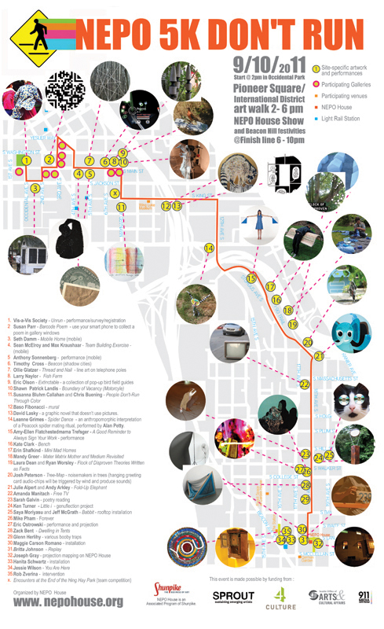

START thinking about not running! NEPO 5k DON'T RUN this Saturday!
There has been a few changes to the performances and site-specific artwork - read info below and pay attention along the route.
Listen to a recent story about NEPO House on KPLU.

NEPO House is proud to present NEPO 5k DON'T RUN
You are invited to hop, skip, crawl, jaunt, hobble, trek, stumble, trot, moonwalk, walkabout, nur, unrun, norun, don't run and encounter Seattle like you never have before!
Date: September 10, 2011 (9/10/11)
Time: Participants will gather at Occidental Park at 2pm, then follow the route through Pioneer Square and International District to Beacon Hill.
NEPO House show and Beacon Hill events: 6:00pm - 10:00pm
Where: Start at Occidental Park (2:00pm) and finish at NEPO House (1723 S Lander Street, Seattle, WA 98144)
On September 10 over 80 artists will prepare site-specific installations along five kilometers of Seattle streets, starting at Occidental Park in Pioneer Square and finishing at NEPO House on Beacon Hill. Following the route, participants will encounter interactive artwork, performing artists, special events at art galleries and finish at NEPO House, which will host an additional art show. Other Beacon Hill venues such as The Station, German Garden and Rockit Space will have live music and refreshments.
This event is free to the public and welcomes participants of all ages. NEPO House is located a block from Beacon Hill's light rail station, providing convenient return transit.
participating artists:
Julie Alpert and Andy Arkley---Sharon Arnold---Rosemarie Auberson---Debra Baxter---Zack Bent---Leo Berk---Anne Blackburn---Christopher Buening---Susanna Bluhm---Kate Clark---Claire Cowie---Robin Crookall---Tim Cross---Seth Damm---Laura Dean and Ryan Worsley---Mike Estabrook---Baso Fibonacci---Nuala Ni Flathuin---Neal Fryett---James Gallagher---Sarah Galvin---Ellen Garvens---Ollie Glatzer---Joseph Gray---Mandy Greer---Leanne Grimes---Troy Gua---Julia Haack---Sohroosh Hashemi---Glenn Herlihy---Matt Hilger---Amelia Hooning---Britta Johnson---Lauren Klenow---Izzie Klingels---Rumi Koshino---Max Kraushaar---Shawn Landis---David Lasky---Nathan Lincoln---Francesca Lohmann---Amanda Manitach---Jen Mao---Jess Marie---Sean McElroy---Keely Isaak Meehan---Saya Moriyasu and Jeff McGrath---Larry Naylor---Matthew Offenbacher---Eric Olson---Eric Ostrowski---D.K. Pan---Susan Parr---Chauney Peck---Josh Peterson---Mike Pham---Andrea Pinheiro---Hair and Space Museum (Emily Pothast and David Golightly)---Maggie Carson Romano---Serrah Russell---Hannah Russell---Steve Sewell---Hanita Schwartz---Erin Shafkind---Carolina Silva---Mike Simi---Vis-a-Vis Society---Tony Sonnenberg---Daphne Stergides---Whiting Tennis (band)---Ian Toms---Amy-Ellen Flatchestedmama Trefsger---Ken Turner---Joey Veltkamp---Jessie Wilson---Brad Winchester---Robert Yoder---Rob Zverina
NEPO 5k DON'T MISS:
-----------------------------------------------------------Site-specific projects along the route
Vis-a-Vis Society - (Un)run - registration/performance
Susan Parr - Barcode Poem
Seth Damm - Mobile Home
Sean McElroy and Max Kraushaar - Team Building Exercise
Anthony Sonnenberg - performance
Timothy Cross - Beacon (Shadow Cities)
Ollie Glatzer - Thread and Nail
Larry Naylor - Fish Farm
Eric Olson - Extinctable
Shawn Patrick Landis - Boundary of Vacancy (Motorcyle)
Susanna Bluhm and Chris Buening - People Don't Run Through Color
Baso Fibonacci - wheat-paste mural
David Lasky - a graphic novel that doesn't use pictures
Leanne Grimes - Spider Dance, performed by Alan Petty.
Amy-Ellen Flatchestedmama Trefsger - A Good Reminder to Always Sign Your Work
Kate Clark - Bench
Erin Shafkind - Mini Mad Homes
Mandy Greer - Mater Matrix Mother and Medium Revisited
Laura Dean and Ryan Worsley - Flock of Disproven Theories Written as Facts
Josh Peterson - Tree-Map
Julie Alpert and Andy Arkley - Fold-Up Elephant
Keely Isaak Meehan - Whispers to me; shouts to me
Amanda Manitach - Free TV
Sarah Galvin - poetry reading
Saya Moriyasu and Jeff McGrath - Babbit
Ken Turner - Little i - Genuflection project
Maggie Carson Romano - windy intervention
Mike Pham - Forever
Zack Bent - Dwelling in Tents
Glenn Herlihy - various booby traps
Britta Johnson - Replay
Joseph Gray - projection mapping on NEPO House
Jessie Wilson - You Are Here
Rob Zverina - Liberated Stationary Bicycles
Julia Haack - Keating's Foible (on the patio of Travelers restaurant on Beacon Ave.)
Anne Blackburn - look for something totally guerrilla sprouting along the route
NEPO House show
Come see new artwork by: Sharon Arnold, Debra Baxter, Leo Berk, Robin Crookall, Mike Estabrook,Baso Fibonacci, Neal Fryett, Klara Glosova, Troy Gua, Sohroosh Hashemi, Matt Hilger, Lauren Klenow, Izzie Klingels, Rumi Koshino, Francesca Lohmann, Amanda Manitach, Matthew Offenbacher, Chauney Peck, Hanita Schwartz, Serrah Russell, Carolina Silva, Mike Simi, Tony Sonnenberg, Daphne Stergides, Ian Toms, Joey Veltkamp, Brad Winchester and Robert Yoder
Soft Desires I Can Trace
An interactive installation curated by Serrah Russell (in entry room)
Claire Cowie, Nathan Lincoln, Ellen Garvens, Hannah Russell, Amelia Hooning, Sharon Arnold, Zack Bent, Nuala Ni Fhlathuin, Jen Mao, Rosemarie Auberson, Jess Marie, James Gallagher, Maggie Carson Romano, Andrea Pinheiro, Rumi Koshino, Celia Perrin Sidarous
Games of Chance
moderated by "the dealer's dealer" D.K. Pan
Come join or observe art dealers, curators and art professionals playing poker and other games around an (un)usual kitchen table.
Soapbox
Sign up for an interview in the shower by art writers and critics John Boylan, Jen Graves and Jim Demetre. This is a chance to tell your story! (live broadcast to the living room)
Living Room Library
by Jessica Powers & Whitney Ford-Terry
Light Drawing
live projection mapping on NEPO House by Joseph Gray (9 - 12pm)
Music performances
6 -10pm (in Larry's garage next door)
6:30pm -Sean McElroy and Max Kraushaar - Team Building Exercise performance
7:00pm - Paul Finch - East Coast Accordicore by Steve Sewell
7:30pm - Eric Ostrowski - performance and projection
8:00pm - Whiting Tennis and his band
9:00pm - Emily Pothast and David Golightly of Hair and Space Museum
10 -12pm dance party with D.J. Seth Damm (in the basement)
11:45pm - Good Night/Good Morning by Nuala Ni Flathuin - live from Ireland.
in Pioneer Square
(Un)run registration by Vis-a-Vis Society - learn those polka moves; they will come in handy later! (see German Garden on Beacon Hill) (Occidental Park, 2 - 4pm)
Get a custom made NEPO t-shirt silk-screened live by Duck-Ugly (Occidental Park, 2 - 4pm) - mix and match NEPO designs by Joey Veltkamp, Troy Gua and more.
NEPO bags demonstration by Janel Twogood - why carry all that baggage around when you can unzip and unload?
Right after registration head to Lawrimore Project for a little surprise by TARL:
Mixtape Release is a dissolving of the boundaries between two communicative mediums: sound art and mixtapes. The artists are Mathis Altmann and Jan Vorisek. At 2pm on September 10th, Jason Hirata will partially coordinate the event, which will include physical and aural dissemination of Altmann and Vorisek's curated CD - a combination of compositions and improvisational recordings.
READY, STEADY, GO gallery hopping with your smart phone! Visit participating galleries, check out their fall exhibits and collect a Barcode Poem by Susan Parr. Look for coded lines of poetry in these participating galleries:
Lawrimore Project, Davidson Galleries, James Harris Gallery, Grover Thurston Gallery, Foster White, Greg Kucera, Gail Gibson Gallery (TK), Platform Gallery (TK), SOIL (TK), Gallery 110 (TK), Gallery 4Culture (change: will be closed), Core Gallery (TK), Punch Gallery (TK), Prole Drift, Cullom Gallery
(*TK stands for Tashiro-Kaplan Building)
SOIL Art Gallery will be handing out numbers and medals and other necessary (non)race paraphernalia. (112 3rd Ave S)
____________________________________________________________in the International District
Cullom Gallery: Pit Stop - a team of drawers/painters on the sidelines will draw on the (non)runners and/or hand out hastily drawn images, akin to hydration and nourishment support participants receive during other competitive events. (603 S Main Street)
Encounters at the End of the Hing Hay Park (corner of Maynard Ave S and S King) - a Herzog-inspired encounter for those people who will be completing the (not)race as a team. Can you find your teammate in a complete white-out? You will see! (or maybe not)
While in the International District keep a lookout for Storefronts - artist activated spaces (marked with green squares on the map).
IDEA Odyssey Gallery (666 S Jackson) is showing Minh Carrico's video installation States of Demise. Right on the route (at 409 Maynard Ave S) check out window installations by Romson Bustillo and Kristin Tollefson
Deng's Studio and Art Gallery - make a stop at Deng's Studio and check out a variety of traditional Chinese calligraphy art and paintings.(670 S King St)
Wing Luke Museum of the Asian Pacific American Experience - stop by The Wing Luke Museum Marketplace, mention the code words "Don't Run" and receive a 10% discount on a drink and snack to refuel and a free temporary tattoo! (719 S King St)
Sun May - special 5k sale in the alley vintage bags from $1 - $5 (5 Canton Alley South - red storefront)
____________________________________________________________on Beacon Hill
NEPO House show - see above
Festival Street car show, live music, food, drinks and more - all organized by The Station Coffee. (5-10 pm) (Lander Street next to the Light Rail Station)
Hungry après walk? Grab some awesome food prepared by local restaurants:
El Quetzal - authentic Mexican Cuisine, Travelers - Indian Cuisine, The Station - tamales and beverages, and more ...
Rockit Space @ Garden House
Need to unwind for a bit? Catch a ride on some (un)usual vehicles from Lander Street through the alley to Garden House. Relax in the garden, enjoy cabaret, food and drinks (2336 15th Ave S - $5 suggested donation)
German Garden - featuring Bavarian Village Band playing polka tunes (7:30 - 9:30pm), refreshments, dirndls and lederhosen.(white picket fence on the corner of 17th Ave S And S McClellan)
FINISH
____________________________________________________________This event is made possible by generous grants from Sprout Seattle, 4Culture, Seattle Office of Arts & Cultural Affairs and Beacon Hill Merchants. Thank you!
Thank you 911 Media Arts for lending your technical expertise and equipment support.
Big thanks to HALFPOPS for a generous donation of delicious snacks!
Brought to you by NEPO House with warm greetings from Team NEPO: Klara Glosova, Amanda Manitach, Bond Huberman, Rumi Koshino and Leanne Grimes. With support from Todd Jannausch, Erin Shafkind, Susanna Bluhm and Seth Damm. Banners by Francesca Lohmann. Logo by Troy Gua.
NEPO House is an Associated Program of Shunpike.